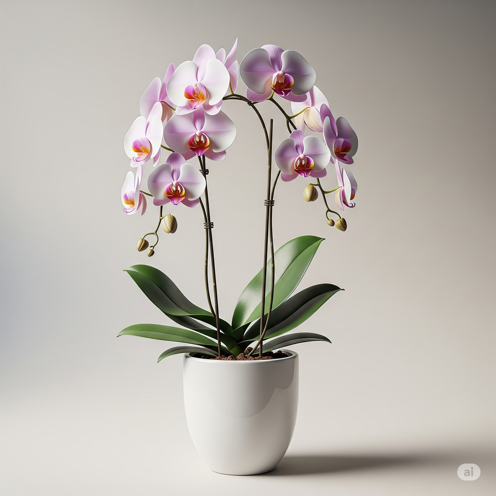

Orquídea Phalaenopsis

Nome científico: Phalaenopsis spp.
✅ Tóxica Não
☀️ Luz ideal: Luz filtrada
💧 Rega: Moderada
Conhecida por suas flores elegantes e duradouras, a Phalaenopsis é uma das orquídeas mais populares em decoração de interiores. Suas flores trazem sofisticação e delicadeza ao ambiente sem oferecer riscos aos felinos.
💡 Curiosidade
Suas flores podem durar até 3 meses — e sua beleza permanece mesmo em ambientes sem sol direto.
← Voltar para Plantas